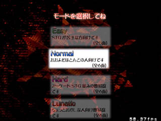
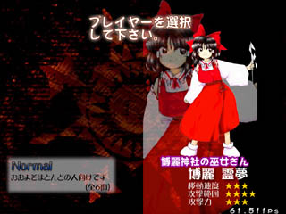
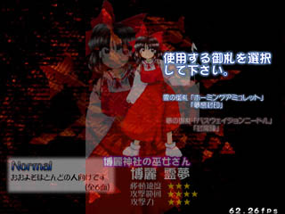
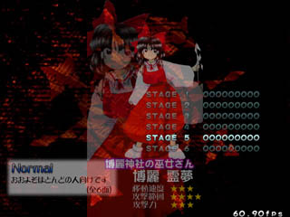

| ■難易度選択 |
|---|
| Ｅａｓｙ |
|
もっとも易しい難易度です。 このモードでは最終面まで行くことは出来ません。 ５面終了時に強制的にバッドエンディングになりまので、 クリアできたらさっさと次の難易度に移行しましょう。 |
| Ｎｏｒｍａｌ |
|
もっとも標準の難易度です。 全６面でおおよそ殆どの方がノーコンティニューでクリアできる難易度です。 ノーコンティニューでクリアするとグッドエンディングになります。 |
| Ｈａｒｄ |
|
ちょっと高めの難易度です シューティングが好きな方、よくやる方に丁度いい難易度になっています。 ノーマルとはまるで違うスペルカードが用意されています。 |
| Ｌｕｎａｔｉｃ |
|
おかしな難易度です。 シューター向けの難易度ですので、普通の方はプレーしないで下さい 火傷します |
| Ｅｘｔｒａ（ＥｘｔｒａＳｔａｒｔ選択時のみ） |
|
難易度高めの気のふれたステージがプレイ出来ます ただ弾が多い、速いとかではなく、特殊なパターンを必要とするステージになっています。 ちなみに、１ステージだけですのでルナティックよりはクリアは簡単です |


